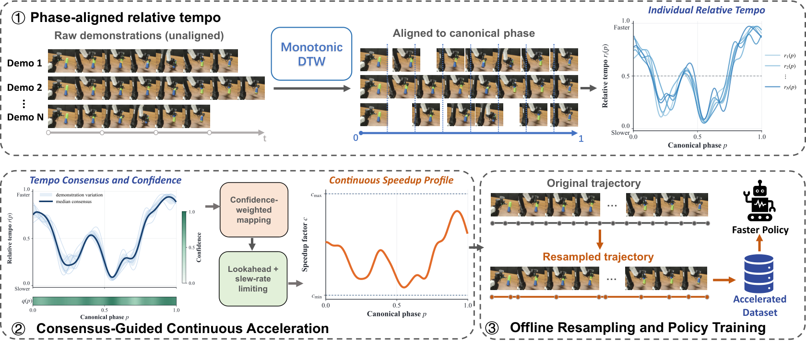
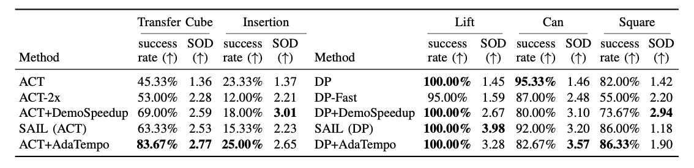
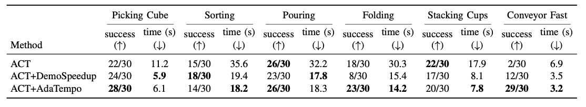

AdaTempo Learning Shared Relative Tempo from Demonstrations for Faster Robot Manipulation
Abstract
Visuomotor policies trained via imitation learning often inherit the unnecessarily slow timing of teleoperated demonstrations. Yet uniform speedup is unreliable because different phases of a manipulation task tolerate acceleration differently. In this work, we introduce AdaTempo, a self-supervised method that accelerates visuomotor policies by exploiting shared relative-tempo structure in demonstrations. AdaTempo establishes phase correspondence, aggregates the aligned relative tempo into a consensus, and maps it to a continuous speedup profile used to resample demonstrations into accelerated training trajectories. Training standard policies such as ACT or Diffusion Policy on these resampled trajectories directly embeds the desired tempo in the learned behavior, without runtime tempo selection or online retiming. Extensive evaluations show that AdaTempo achieves up to a 3.57× speedup and yields a stronger success–speed trade-off than the original policies and representative acceleration baselines.
Method

AdaTempo aligns demonstrations to a shared task phase, combines their relative tempo into a confidence-weighted consensus, and derives a continuous speedup profile. It then resamples demonstrations to train standard ACT or Diffusion Policy models, enabling faster execution without runtime tempo selection or online retiming.
Results
Simulation Results

Real-world Results

Videos
We evaluate AdaTempo on ALOHA and robomimic simulation tasks using human-collected demonstrations. Selected task videos comparing AdaTempo with baseline methods are shown below.
We evaluate AdaTempo on six real-world manipulation tasks, spanning picking, sorting, pouring, folding, cup stacking, and conveyor-based manipulation. Selected videos compare the original ACT policy, DemoSpeedup where available, and AdaTempo.
Can — simulation comparison.
BibTeX
@article{cao2026adatempo,
title={AdaTempo: Learning Shared Relative Tempo from Demonstrations for Faster Robot Manipulation},
author={Cao, Jiale and Niu, Yike and Xue, Zhengrong and Xu, Huazhe},
journal={arXiv preprint arXiv:2610.02706},
year={2026},
url={https://arxiv.org/abs/2610.02706}
}